Projects
List with 24 projects organised by families.
Security and Backups
Automated Backup Policy
Automated incremental, backup system for Linux and Windows servers, centralized on secure and controlled storage.
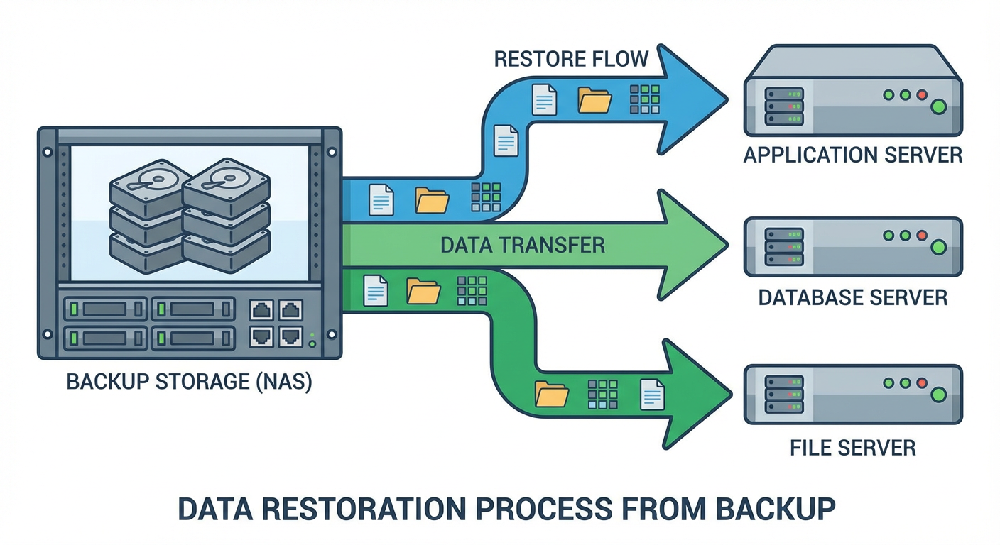Server Security Audit
Audit tool designed to evaluate security configurations, permissions, and services on Linux and Windows, more operative systems servers.
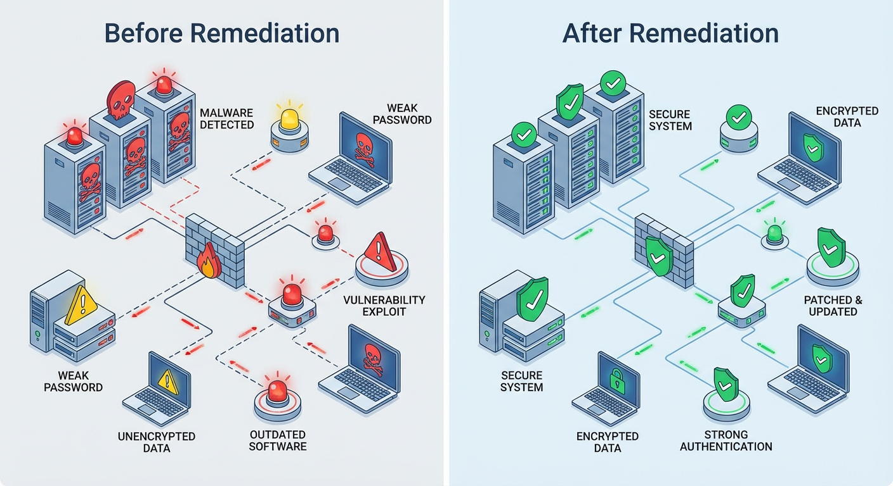Virtualization and Containers
Proxmox Virtualization Cluster
Implementation of a high-availability virtualization cluster that keeps services running even in case of hardware failures.
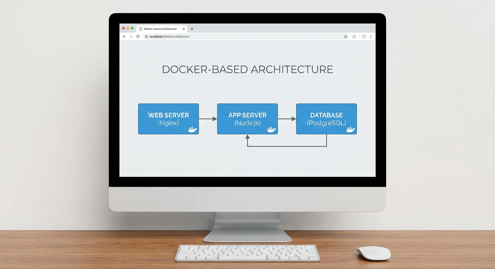Containers for Web Applications
Containerization of web applications for fast, reproducible, and isolated deployments across environments.
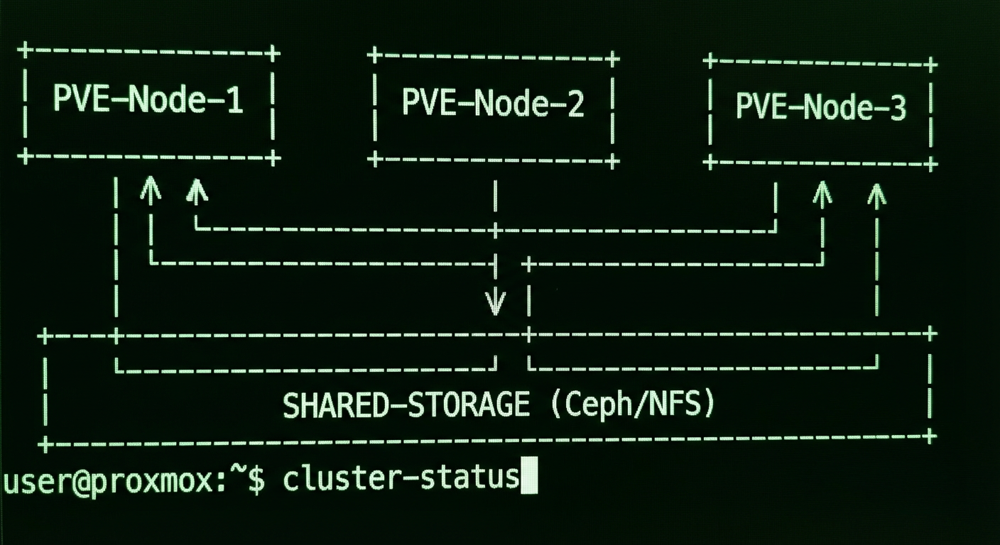Networks and Connectivity
Secure Corporate VPN
Encrypted VPN solution that provides secure remote access to the corporate internal network.
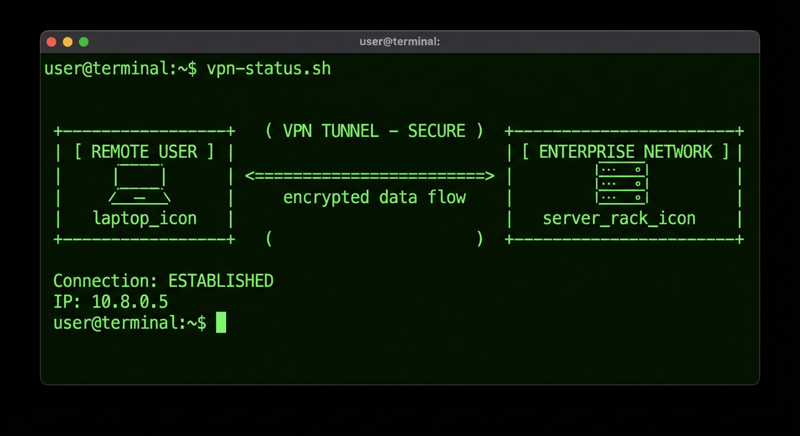Network Traffic Monitor
Network traffic analysis system designed to detect bottlenecks and anomalous behavior.
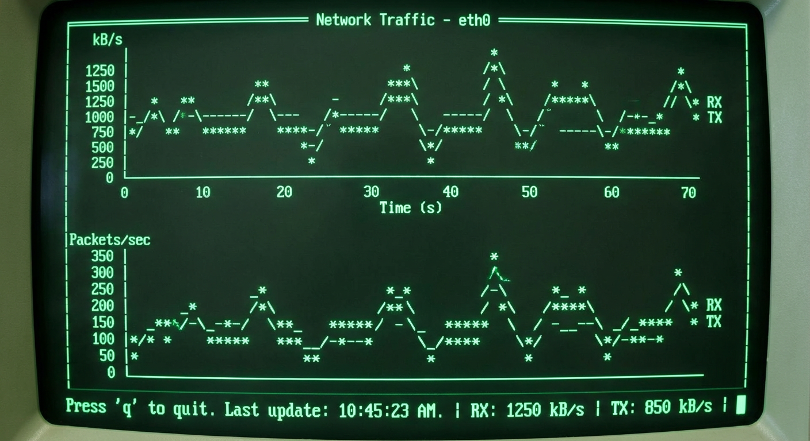Automation and Scripting
Windows Task Automation
Automation of repetitive administrative tasks in Windows environments using PowerShell scripts.
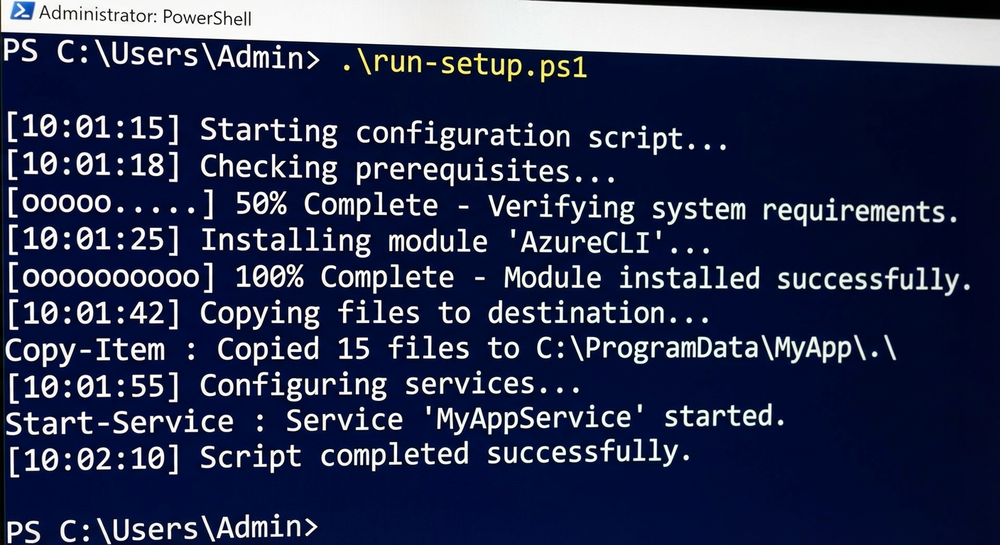Initial Server Configuration
Provisioning script that prepares new servers following predefined standards.
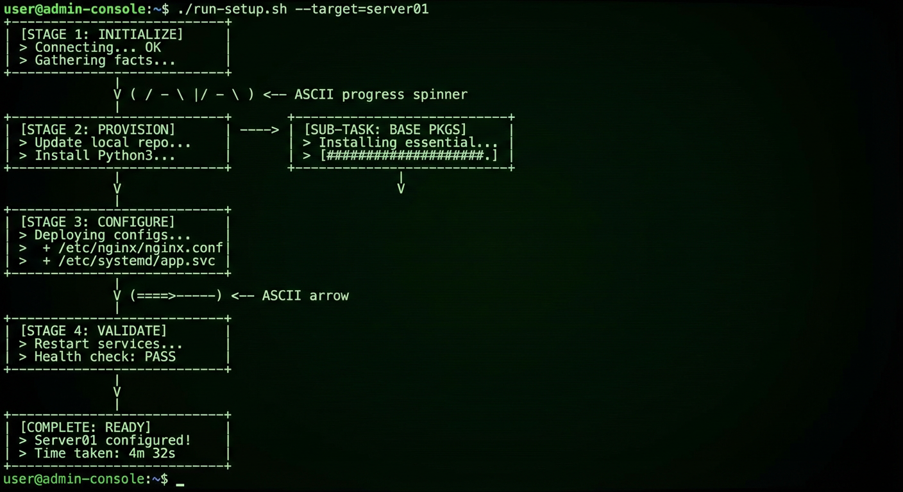Application Monitoring
Web Services Status Dashboard
Visual panel displaying status, uptime, and performance of internal web services.
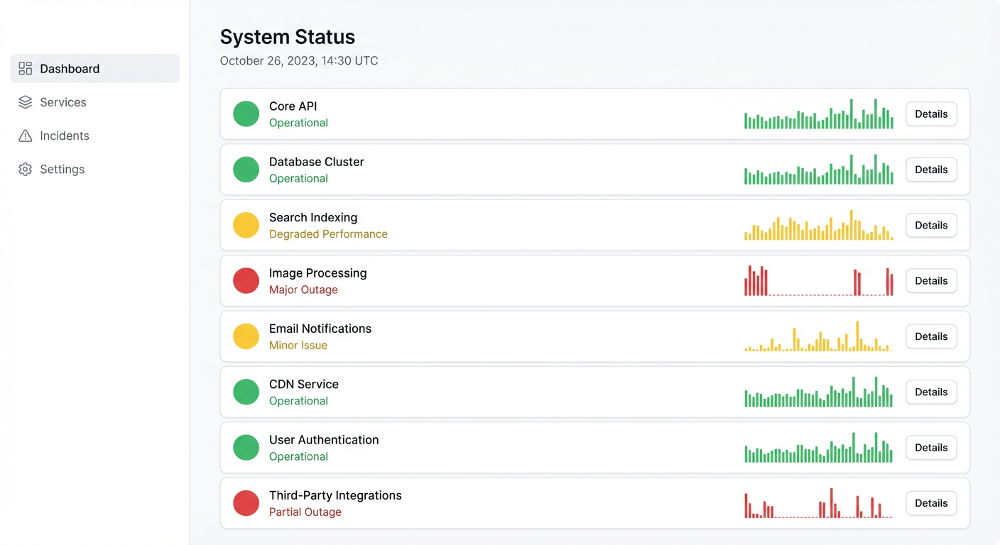Automatic Log Error Alerts
System that analyzes application logs and generates alerts when critical errors are detected.
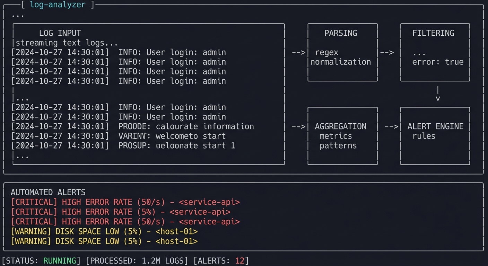Backup and Disaster Recovery
Disaster Recovery Plan Simulation
Design and implementation of a centralized backup system to protect critical servers and data across multiple environments
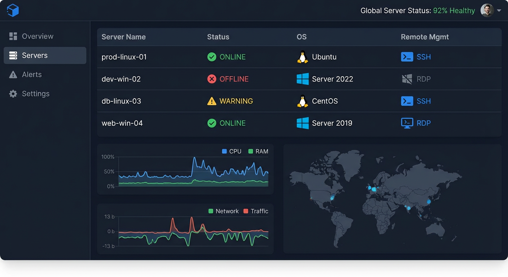Centralized Backup Strategy
Simulation of disaster recovery scenarios to validate data restoration procedures and recovery time objectives (RTO).
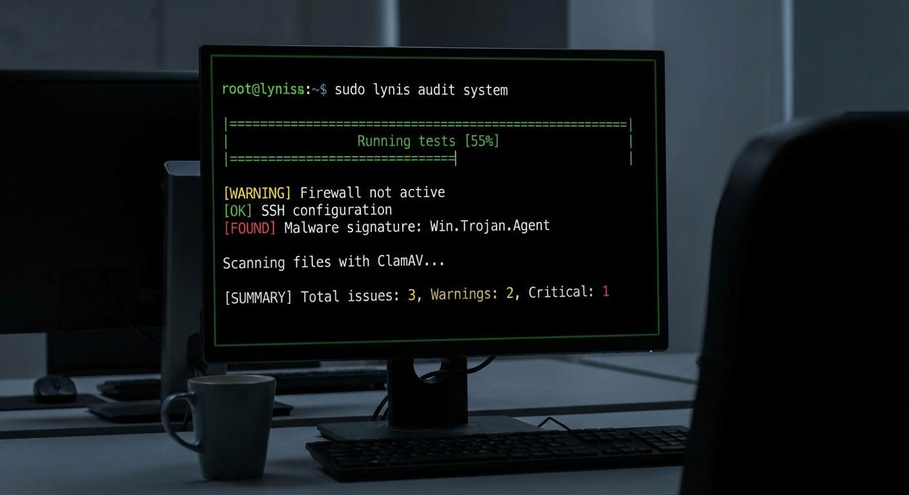Security and Hardening
Linux Server Hardening
Security hardening of Linux servers by applying best practices, reducing attack surface, and enforcing strict access controls.
Vulnerability Assessment Automation
Automated vulnerability scanning process to identify and report security weaknesses in infrastructure components.
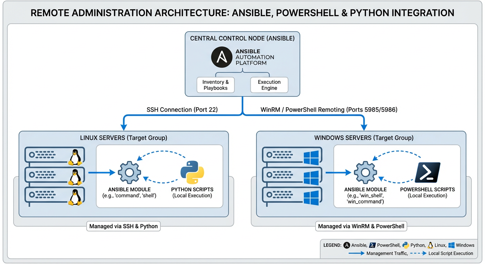Databases and Storage
High Availability Database Setup
Deployment of a high-availability database architecture to ensure data consistency and service continuity.
Centralized Storage Server
Implementation of a centralized storage solution for shared access, backups, and virtual machine disks.
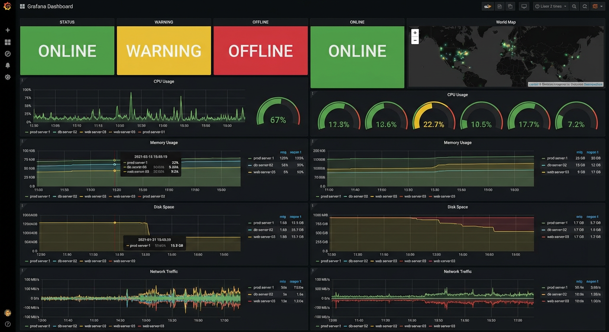Cloud and Hybrid Infrastructure
Hybrid Cloud Integration
Integration of on-premise infrastructure with cloud services to extend scalability and redundancy.

Cloud Resource Cost Monitoring
Monitoring solution to track cloud resource usage and optimize operational costs.
Monitoring and Observability
Infrastructure Health Monitoring
Monitoring system that tracks CPU, memory, disk, and network metrics across all infrastructure nodes.
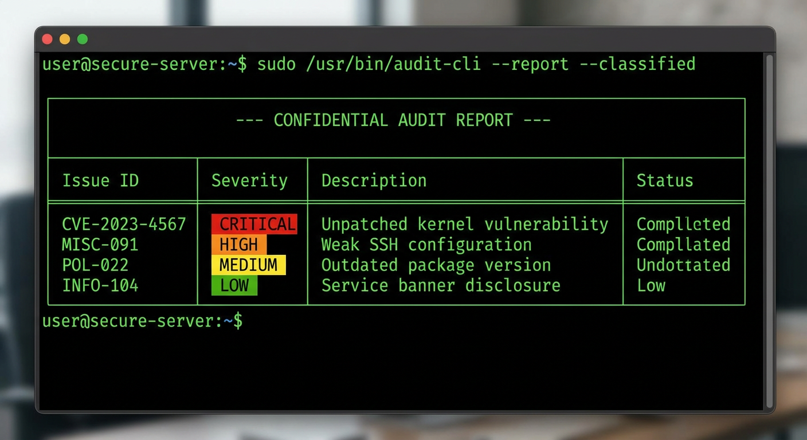Service Availability Reports
Automated reports providing historical availability and downtime statistics for critical services.

Identity and Access Management
Centralized User Authentication
Central authentication system to manage user identities and access across multiple platforms.
Role-Based Access Control
Implementation of role-based permissions to enforce least-privilege access policies.
DevOps and CI/CD Foundations
Continuous Deployment Pipeline
Basic CI/CD pipeline that automates application deployment after code changes.
Automated Testing Workflow
Automated testing process integrated into the deployment pipeline to ensure application stability.